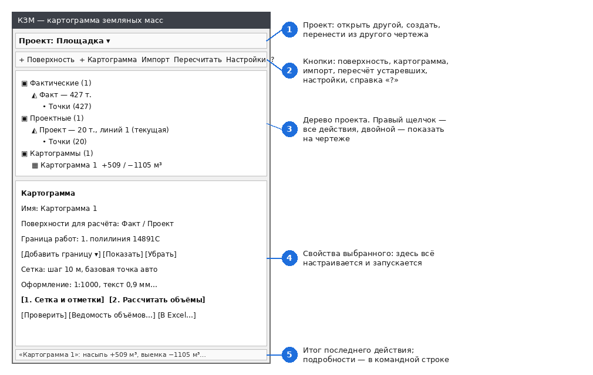
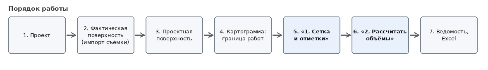
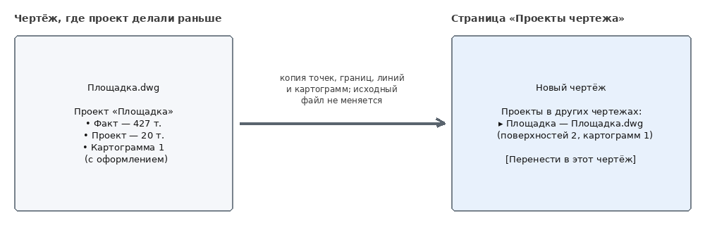
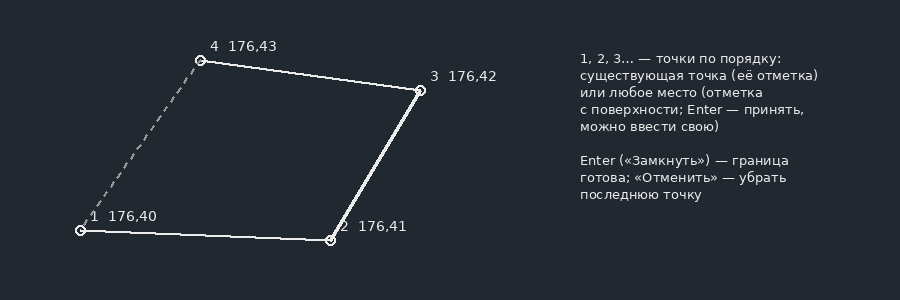
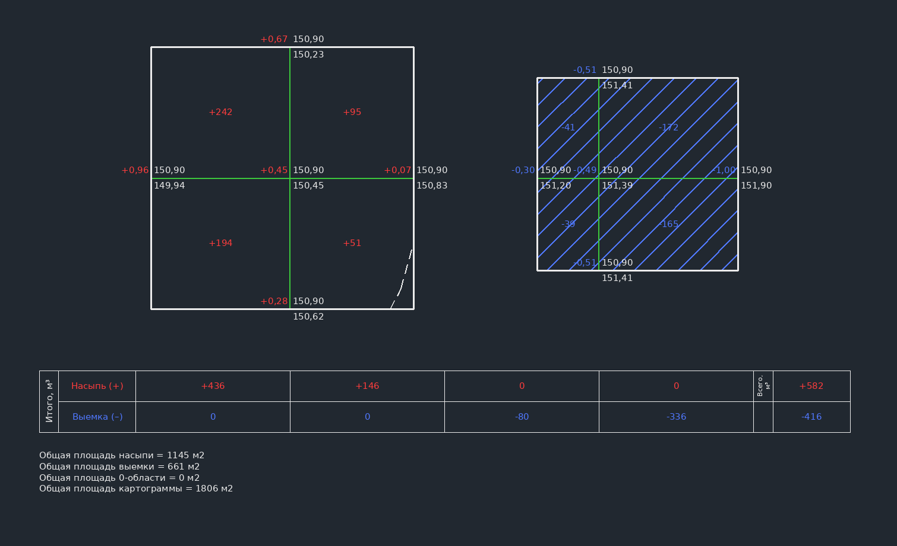
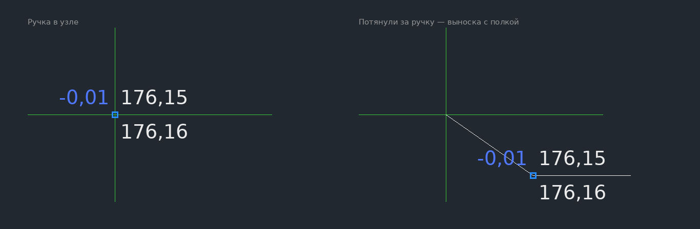
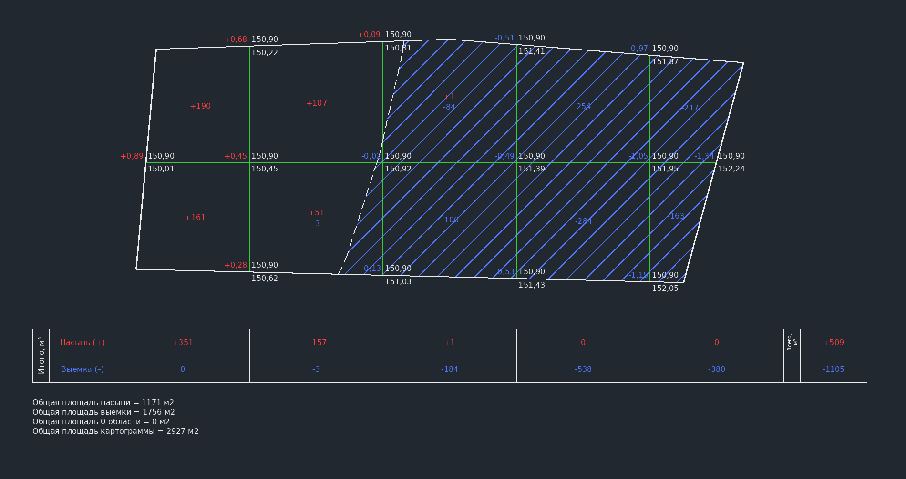
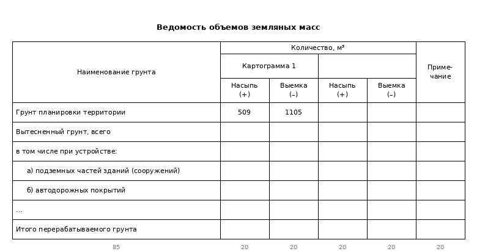

1. Установка и панель
- Закройте AutoCAD и запустите
KZM-Setup-…exe. Если модуль уже стоит, выберите «Исправить / обновить». - Запустите AutoCAD и откройте чертёж. Единица чертежа — 1 метр.
- Введите команду
KZMили выберите в меню «Картограмма» → «Панель КЗМ». Справа откроется панель.

- Дерево. Щелчок открывает свойства. Правый щелчок — все действия с объектом. Двойной щелчок показывает объект на чертеже. Delete удаляет.
- Отмена. Каждое действие панели — одна команда AutoCAD: отменяется одной командой
U. - Справка. ? → «Справка с картинками» на панели, команда
KZM_HELPили меню «Картограмма» → «Справка» открывают эту справку. ? → «Порядок работы» показывает, что уже сделано в чертеже. - Колесо мыши. Колесо прокручивает панель и не меняет значения в списках. Значение выбирается только в раскрытом списке.
2. Порядок работы

- Проект. Создайте проект или перенесите готовый из другого чертежа.
- Фактическая поверхность. Импортируйте отметки съёмки.
- Проектная поверхность. Задайте точки вручную, плоскость, структурные линии.
- Картограмма. Выберите поверхности и укажите границу работ.
- 1. Сетка и отметки — проверьте и при необходимости поправьте отметки.
- 2. Рассчитать объёмы — объёмы, штриховка, линия нулевых работ, таблица, площади.
- Ведомость объёмов и выгрузка в Excel.
3. Проекты
Проект — набор поверхностей и картограмм. Он хранится в самом DWG. В одном чертеже может быть несколько проектов. В панели виден только открытый.
- Создать. Кнопка «Проект ▾» вверху панели → «Новый проект…». Введите название → Создать.
- Открыть другой. «Проект ▾» → выберите его по названию.
- Переименовать или закрыть. «Проект ▾» → «Переименовать / закрыть…». Закрытый проект можно открыть снова — данные на месте.
Проект из другого чертежа
Проекты всех чертежей, которые вы сохраняли или открывали с модулем, видны в любом чертеже — и в новом тоже.

- Откройте страницу «Проекты чертежа»: «Проект ▾» → «Проект из другого чертежа…». В новом чертеже она открывается сама.
- В списке «Проекты в других чертежах» выберите проект. Рядом с названием указаны файл, дата и сколько в проекте поверхностей и картограмм.
- Нажмите Перенести в этот чертёж (или щёлкните дважды) → «Да».
- В чертёж копируются точки, границы, структурные линии, треугольники и картограммы проекта вместе с оформлением и ведомостями, затем проект открывается.
- Если панель пометит картограммы «постройте заново», нажмите 1. Сетка и отметки, затем 2. Рассчитать объёмы. Сдвинутые вами подписи и выноски останутся на месте.
- Старого чертежа нет в списке? Нажмите Взять из файла… и выберите DWG: его проекты появятся в списке. Либо один раз откройте тот чертёж.
- Открыть тот чертёж открывает исходный DWG в AutoCAD. Если он уже открыт, переключает на него.
- Убрать из списка убирает только строку списка, сам чертёж не меняется.
U.4. Фактическая поверхность (съёмка)
- Нажмите + Поверхность, введите имя (например, «Факт»), тип «Фактическая» → Сохранить.
- Нажмите Импорт и выберите, откуда брать отметки:
- Тексты — подписи отметок (TEXT, MTEXT);
- POINT (отметка в Z) — точки с высотой;
- Блоки с атрибутом — блоки съёмки, в которых отметка записана атрибутом.
- Выберите объекты: По слоям или Рамкой. Выбранные объекты сразу подсвечиваются на чертеже.
- Укажите, где точка: По маркеру (кружок или крестик рядом с текстом) или Точка вставки текста.
- Нажмите Проверить. Модуль покажет, сколько точек создаст, что отбросит и где спорные места (две отметки рядом, нечитаемый текст).
- Нажмите Импортировать. Подсветка снимается.
Таблица точек — все точки поверхности. Номер и отметку можно исправить прямо в таблице. «Искл.» временно не учитывает точку в треугольниках. Двойной щелчок по строке показывает точку на чертеже.
5. Проектная поверхность
- Нажмите + Поверхность, тип «Проектная».
- Задайте проектные отметки любым способом:
- Создать точки вручную… — укажите точку, введите отметку; Enter повторяет предыдущую;
- Плоскость… — по трём точкам или по точке и уклонам (‰). Точки плоскости ставятся в выбранных местах;
- Структурная линия по полилинии… — бровки, лотки, бортовой камень: рёбра треугольников идут по линии, отметки между её точками — по длине;
- Импорт… — как у фактической поверхности.
- Граница поверхности (не обязательно): Указать границы… — одна или несколько замкнутых полилиний. Треугольники и отметки будут только внутри них.
6. Картограмма
- Нажмите + Картограмма. Выберите фактическую (Hф) и проектную (Hпр) поверхности.
- Проверьте умолчания: масштаб 1:1000, шаг сетки 10 м, высота текста 0,9 мм на листе (0,9 в чертеже). Для 1:500 высота сама станет 1,8 мм, если вы её не меняли.
- Укажите границу работ (ниже) и нажмите Сохранить.
Граница работ
Добавить границу ▾ предлагает три способа:
- По точкам — отметки с фактической;
- По точкам — отметки с проектной;
- Выбрать готовые полилинии — одну или несколько; полезно, если полилиния 3D с отметками.

- Укажите точки границы по порядку. Щелчок по существующей точке поверхности берёт её отметку. Щелчок в любом другом месте берёт отметку с выбранной поверхности: Enter принимает её, можно ввести свою.
- «Отменить» убирает последнюю точку. Enter («Замкнуть») заканчивает границу.
- Граница рисуется на слое
КЗМ_ГРАНИЦАлинией 0,30 мм. Её точки добавляются в проектную поверхность, сама граница становится её структурной линией.
Несколько частей. Если работы идут на нескольких отдельных площадках, добавьте все части. Картограмма будет одна общая: одна сетка, одна таблица, общие объёмы, площади и контрольный расчёт. Части не должны перекрываться, касаться могут. Убрать удаляет часть из списка: если её рисовал модуль по точкам, она стирается вместе со структурной линией, а точки остаются в поверхности.

Сетка и оформление
- Шаг — 10 м по умолчанию. По п. 7.2 СТБ 2073-2010 «как правило» берут 20 м, допускается 10, 25, 40 или 50 м.
- Базовая точка. «Авто» — линии сетки кратны шагу. Можно указать точку.
- Показать сетку — временно показывает будущую сетку, в чертеж ничего не пишется.
- Оформление: масштаб, высоты текста (мм на листе), знаков после запятой у объёмов, зазор до таблицы, шаг и толщина штриховки, подписи в узле (угол, слой, цвет).
- Шрифт всех текстов картограммы задаётся в «Настройках», по умолчанию GOST Common.
Шаг 1. Сетка и отметки
- Нажмите 1. Сетка и отметки. Появятся сетка (зелёная, только внутри границы) и отметки в узлах и в точках, где сетка пересекает границу.
- Отметки стоят по углам точки, как в примере Б.4 СТБ:
- рабочая — слева вверху: насыпь красным, выемка синим;
- проектная — справа вверху;
- фактическая — справа внизу.
- Проверьте отметки. Исправить можно в «Свойствах» (Ctrl+1) или в «Быстрых свойствах» блока отметок:
- исправили проектную или фактическую — рабочая пересчитывается сразу (h = Hпр − Hф по отметкам, округлённым до 0,01 м, как подписано);
- исправили рабочую — сразу меняется проектная.
- При расчёте объёмов исправленные отметки записываются в поверхности.
Выноска, если подписи наезжают друг на друга

- Щёлкните по отметкам узла. У блока одна ручка — квадратик в углу сетки.
- Потяните за неё. Все три значения переедут вместе. Модуль нарисует линию от узла и полку: проектная над полкой, фактическая под ней, рабочая слева.
- Чтобы убрать выноску, верните ручку в узел — подписи встанут точно на место.
- При пересчёте подписи и выноски остаются там, куда вы их поставили.
Шаг 2. Рассчитать объёмы

Нажмите 2. Рассчитать объёмы. Появятся:
- Объёмы в квадратах: насыпь «+…» красным, выемка «−…» синим.
- Линия нулевых работ — штриховая, 0,30 мм (п. 3.12 СТБ).
- Штриховка выемки — синие линии под 45° с шагом из свойств (по умолчанию 4 мм на листе). Мелкая выемка — участок меньше квадрата со стороной в два шага штриховки — не штрихуется.
- Таблица под сеткой (рис. 8 СТБ): графы 5 и 20 мм, столбцы по сетке, строки 8 мм, «Итого» и «Всего».
- Площади насыпи, выемки, 0-области и всей картограммы. 0-область — где рабочая отметка 0,00.
Таблицу и блок площадей можно передвинуть: при пересчёте они останутся там. Итоги расчёта — в строке под панелью и в командной строке.
Проверить считает, ничего не рисуя. С галочкой «Контрольный расчёт» объём дополнительно считается наложением поверхностей и показывается расхождение с методом квадратов.
7. Ведомость объёмов и Excel

- В свойствах картограммы нажмите Ведомость объёмов… и укажите левый верхний угол.
- Модуль заполнит первую территорию — её название и строку «Грунт планировки территории». Числа записываются как в примере А.6 («150 000», «7320», ноль — «—»).
- Остальные строки и вторую территорию заполняете вы. При пересчёте модуль обновит только свою строку.
В Excel… сохраняет .xlsx или .csv с листами «Точки», «Квадраты» и «Итоги» (в том числе площади и контрольный расчёт).
8. Настройки и шаблон
- Настройки на панели:
- знаков после запятой в отметках;
- масштаб новых картограмм;
- шрифт текстов картограммы (и «наклонный»). Смена шрифта сразу меняет уже построенные тексты.
- Сохранить как шаблон — эти настройки будут у новых чертежей.
- Сделать шаблоном в свойствах картограммы — её шаг, масштаб, высоты текста, подписи и другие параметры будут у новых картограмм.
- Шаблон хранится в
%APPDATA%\Sh0MeM0\Kzm\defaults.txt, список проектов — вprojects.txtтам же.
9. Удаление и отмена
- Стереть построение убирает нарисованную картограмму, её параметры остаются.
- Удалить картограмму удаляет всё: построение, ведомости, границы, нарисованные по точкам, и параметры. Перед удалением модуль покажет список. Поверхности не меняются.
- Любое действие панели отменяется одной командой
U.
10. Если что-то не так
| Что видно | Что делать |
|---|---|
| Картограмма в дереве оранжевая, «постройте заново» | Поверхности или параметры изменились, либо картограмма построена прежней версией. Нажмите «1. Сетка и отметки», затем «2. Рассчитать объёмы». Сдвинутые подписи останутся на месте. |
Красные кружки с текстом на слое КЗМ_ПРОВЕРКА | Места, где не хватило данных (нет поверхности, нечитаемая отметка). Слой не печатается. Убрать пометки — кнопка «Убрать пометки». |
| «Границы 1 и 2 перекрываются» | Две части границы заходят друг на друга. Исправьте полилинии или уберите лишнюю часть. |
| «Шрифт … не установлен в Windows» | Установите шрифт или выберите другой в «Настройках». Пока шрифта нет, тексты пишутся текущим стилем чертежа. |
| Проекта старого чертежа нет в списке «Проекты в других чертежах» | Откройте тот чертёж один раз или нажмите «Взять из файла…». |
| В командной строке «КЗМ: … — N с» | Действие панели заняло больше 0,5 с. Если это повторяется, пришлите разработчику эти строки. |
| Подписи наезжают друг на друга | Потяните блок отметок за ручку — появится выноска (раздел 6). |
11. Команды
| Команда | Что делает |
|---|---|
KZM | Панель «КЗМ» |
KZM_IMPORT | Панель на форме импорта |
KZM_POINT | Точки вручную в текущую поверхность |
KZM_CARTOGRAM | Новая картограмма |
KZM_UPDATE | Пересчитать устаревшие картограммы |
KZM_SETTINGS | Настройки чертежа |
KZM_CLEARMARKS | Убрать пометки проверки |
KZM_HELP | Эта справка и список команд |
KZM_MENU | Восстановить меню |
Нормативный источник оформления — СТБ 2073-2010* «Правила выполнения чертежей генеральных планов…» (переиздание 2019 г. с Изменениями № 1 и № 2): п. 3.12, 3.13, 3.15, 7.1–7.3, рис. 8 и 9, примеры А.6 и Б.4. Действует ли стандарт сейчас, проверьте по каталогу ТНПА.